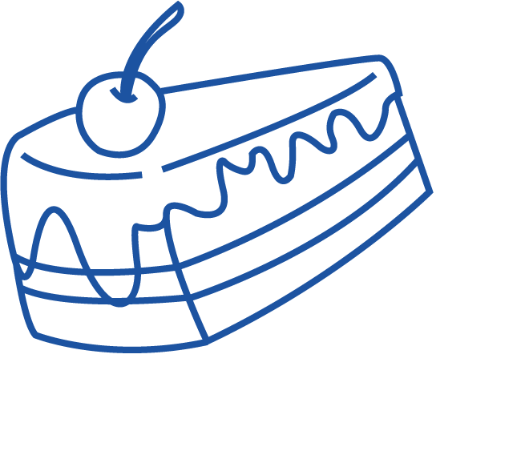
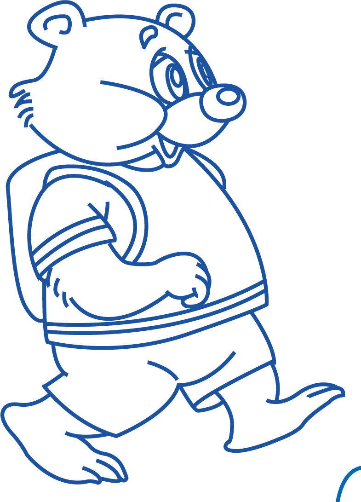
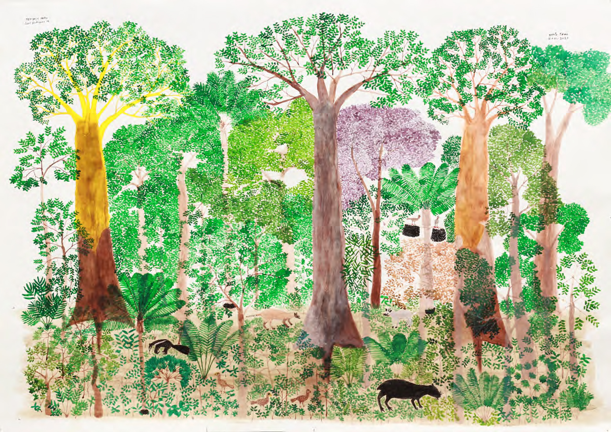
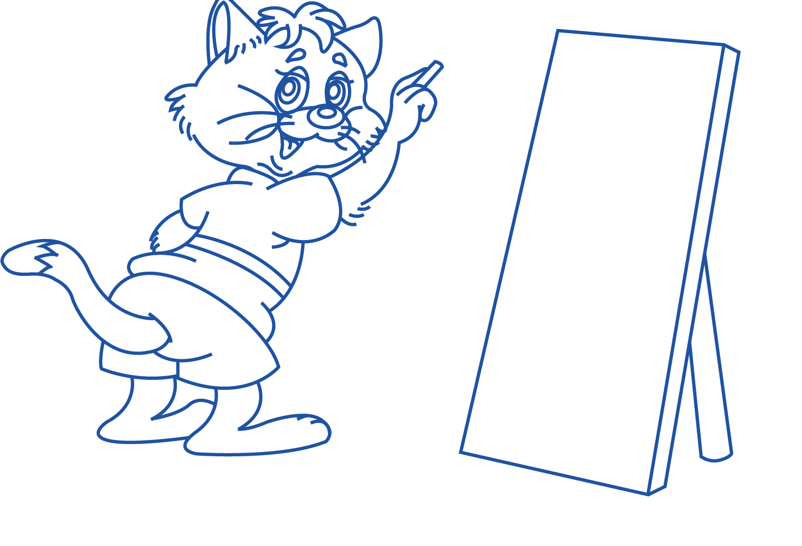

¡Hola, bienvenido! Mi nombre es Profesor Zorro. En esta unidad acompañaremos a Gato Artista. Aprenderemos sobre el arte, la naturaleza y un pintor colombiano muy especial.
Antes de que te presente a Gato Artista, estudiaremos el Pretérito Simple y el Pretérito indefinido. Estoy seguro que recuerdas tus clases sobre pretéritos, sin embargo te mostraré un resumen
¿Cuándo lo usamos?
- Usamos el pretérito simple para hablar de acciones completas en el pasado (empezaron y terminaron)
- Estas acciones son puntuales y suceden en un momento específico (sabemos cuándo sucedió)
Ejemplos:
- Ayer comí pastel en el parque
- La semana pasada conocí a Abel
Recuerda: Hay palabras clave que nos ayudan a identificar el Pretérito Simple: ayer, antier, el año pasado, hace dos días, etc.
¿Cuándo lo usamos?
- Acción repetida o habitual: Algo que sucedía frecuentemente en el pasado
- Descripciones: Como eran las cosas en el pasado o las características de una persona
- Acciones en progreso: Algo que ocurría cuando otra acción interrumpe
Ejemplos:
- Cuando era niño, caminaba en el bosque todos los días
- Mi casa era grande y tenía un jardín
- Mientras pintaba, alguien tocó la puerta
Recuerda: Hay palabras clave que nos ayudan a identificar el Pretérito Imperfecto: antes, siempre, cuando era, de niño, de pequeño, mientras, etc.
El Señor Panda es muy observador, él te ayudará a comparar los pretéritos:
| Pretérito Simple | Pretérito Imperfecto |
|---|---|
| Acción completa y terminada | Acción habitual o en proceso |
| Ocurrió una vez | Ocurre repetidamente |
| Momento específico | No sabemos el momento específico |
| Ejemplo: Ayer dibujé durante 2 horas | Ejemplo: Cuando era joven dibujaba cada mañana |
| Ejemplo: El año pasado viajé a Italia | Ejemplo: Cuando vivía en Italia, visitaba museos cada semana |
Antes de que conozcas a Gato Artista, quiero que leas un texto que él escribió sobre el artista colombiano Abel Rodríguez, ¿puedes ver cómo Gato Artista usa los pretéritos?
Esta es la pintura favorita de Gato Artista, Abel Rodríguez la pintó en 2021
Abel Rodríguez fue un artista colombiano. Nació en el Amazonas y creció en la selva. Desde pequeño, aprendía mucho sobre los árboles y las plantas de su región. Miraba todo a su alrededor y decidió dibujar lo que veía. Pintó muchos cuadros con árboles, hojas y flores. En sus dibujos, mostraba la belleza de la naturaleza en la selva.
Abel siempre trabajaba con mucho detalle. Usaba colores brillantes para pintar las plantas que conocía. Pasaba muchas horas observando los árboles antes de dibujar. Su arte es especial porque nos enseñaba sobre la importancia de cuidar la naturaleza y respetar a las personas que viven en la selva.
¡Ahora estás listo para conocer a Gato Artista!

Gato Artista te contará la historia de cómo se convirtió en un gran artista, pero necesita tu ayuda para recordar todo, ¿Puedes ayudarle a Gato Artista completando los espacios en blanco con el pretérito adecuado?
Gato Artista con ser un gran artista. Desde muy pequeño, le dibujar y pequeñas esculturas. que quería inscribirse en la escuela de arte. Gato Artista se muy emocionado para su primer día de clase. sus pinceles, un delantal, una libreta y los en su mochila. Se a la escuela en su bicicleta. Cuando , a su maestro. El Señor Castor Pintor a los estudiantes. Un día, Gato Artista una clase especial de arte colombiano. El profesor les las obras de un gran artista llamado Abel Rodríguez. Rodríguez la naturaleza, los árboles y las plantas de la selva amazónica. Gato Artista se impresionado. Le tanto los paisajes, que hacer algo similar. Gato Artista a su casa muy inspirado. por la ventana y los árboles y las flores de su jardín. sus pinceles y plantas, árboles y montañas. muchos colores para hacer su cuadro. Al día siguiente, Gato Artista su pintura a la escuela. Todos sorprendidos con su trabajo. El maestro le : "¡Es una pintura maravillosa!". Desde ese día, Gato Artista a pintar muchos paisajes. Le ir al campo a mirar los árboles y las plantas, y luego lo que . Siempre las lecciones de Abel Rodríguez sobre respetar y admirar la naturaleza. Meses después, Gato Artista su serie de cuadros. Todos los que sus obras lo por su creatividad y talento. Gato Artista y : "Gracias a mi maestro y a Abel Rodríguez, encontré el amor por la naturaleza y el arte".¡Felicitaciones, ya conoces la gran historia de Gato Artista! Sin embargo, Gato Artista aún no te conoce, ¡cuéntale algo sobre tu vida!
¡A Gato Artista le ha encantado tu historia! Ahora que son amigos, Gato Artista te ha invitado a pintar con él. Ayúdalo a terminar su próxima obra de arte.